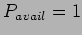

Next: Demand profile
Up: Problem complexity metrics (PCM)
Previous: Problem complexity metrics (PCM)
Contents
This is the time evolving profile of the number of observation groups which could be scheduled according to their explicit timing constraints. Additional refinements include convolving with the probability of the time actually being available based on likely weather and technical downtime forecasts. The average contention over the course of a night gives an estimate of how overloaded the schedule could potentially be. This static contention profile is a crude measure as it does not take into account the fact that some of the groups which figure in the contention profile later in the night may have already been selected by then and thus need not be considered. Another possibility is to introduce a weighted probability of execution on those groups figuring later in the night to reduce the the effect of early executions, - e.g. a simple exponential decay from
 at the start of group's execution window with decay factor based on the group's likely execution - though how do I work that out ? - most likely this would depend on the contention statistics we are actually trying to work out ! Effects of disruptors early in the night will also change the contention later as groups which ought to have been executed may still be in contention later. The dynamic contention profile  is calculated by performing a forward simulation through the night and extracting actual contention in the process - this is of course somewhat dependant on the scheduler used but can be a valuable tool for assessing the degree of competition between groups
is calculated by performing a forward simulation through the night and extracting actual contention in the process - this is of course somewhat dependant on the scheduler used but can be a valuable tool for assessing the degree of competition between groups
Next: Demand profile
Up: Problem complexity metrics (PCM)
Previous: Problem complexity metrics (PCM)
Contents
Steve Fraser
2008-01-31